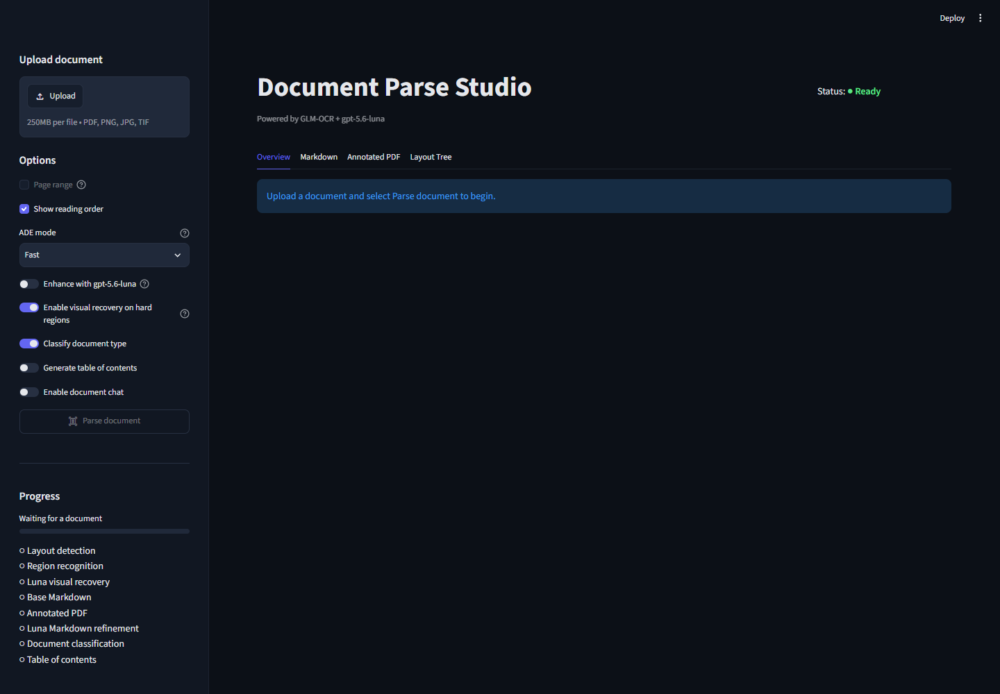

README.md
Repository overview
A workstation-oriented Streamlit studio that parses PDFs and images with local GLM-OCR, then optionally sends selected crops or recognized document context to gpt-5.6-luna for bounded visual recovery and document-level reasoning.
Repository: github.com/pypi-ahmad/grounded-docparse
GLM-OCR owns layout, element IDs, normalized bounding boxes, types, confidence, and reading order. Luna visual recovery can replace only text on an existing element when the returned confidence is at least 0.85; additions, deletions, geometry changes, type changes, and reading-order changes are ignored. Image recovery uses high reasoning effort. Markdown refinement, classification, table-of-contents generation, extraction, and chat use medium effort.
upload
-> raster ingest
-> GLM-OCR layout and recognition
-> deterministic quality analysis
-> optional bounded Luna crop recovery
-> grounded Markdown, elements, JSON v4.4.0, annotated PDF
-> optional Luna refinement, classification, TOC, extraction, and chat
Application preview#

Every PDF page is rendered to pixels. Selectable or embedded PDF text is not extraction evidence. The parser processes ordered windows of 16 pages with up to eight page workers by default. If at least one page is nonblank and none of the nonblank pages contains a GLM layout region, parsing stops before Luna features run; isolated page failures remain visible as warnings.
Install and set up#
The supported runtime requires Windows 11, WSL2 with Ubuntu 24.04, an NVIDIA Windows driver with WSL GPU passthrough, Git, enough disk space for the WSL environment and model cache, and network access for the first dependency and model download.
- Clone the repository from PowerShell:
git clone https://github.com/pypi-ahmad/grounded-docparse.git
Set-Location grounded-docparse
- Confirm WSL and the GPU are available:
wsl --install -d Ubuntu-24.04
wsl --update
wsl -d Ubuntu-24.04 -- nvidia-smi
Restart Windows and complete Ubuntu's first-login setup if requested.
- Optional: enable Luna visual recovery and document reasoning by saving the OpenAI values in the Windows user environment. Skip this step for local GLM-only parsing.
[Environment]::SetEnvironmentVariable("OPENAI_API_KEY", "your-key", "User")
# Optional OpenAI-compatible endpoint:
# [Environment]::SetEnvironmentVariable("OPENAI_BASE_URL", "https://example.com/v1", "User")
- Run the first-time setup from the repository root:
.\Setup-GLM-OCR.cmd
This creates the locked WSL environment, downloads the pinned GLM-OCR and PP-DocLayoutV3 snapshots, starts vLLM and Streamlit, validates a real OCR request, and opens http://localhost:8501.
- For later sessions, start or reuse the managed services with:
.\Launch-GLM-OCR.cmd
Launch-GLM-OCR.cmd refreshes OPENAI_API_KEY and optional OPENAI_BASE_URL from Windows user scope each time. See setup for manual WSL installation, configuration, security boundaries, and troubleshooting, or run commands for service lifecycle commands.
How to use the app#
- Upload one PDF, PNG, JPEG, or TIFF. An optional inclusive page range is available for PDFs.
- Choose an ADE mode—the UI name for presets that control optional Luna features, not an external ADE integration. Every mode still runs the same GLM parse: - Fast: classification is the only preset-controlled Luna feature; visual recovery is a separate toggle and defaults on when a key is available. - Full: Markdown refinement, classification, and TOC generation. - Custom: any other combination of those toggles.
- Keep visual recovery enabled to inspect up to eight prioritized crops per document, capped at three crops per page.
- Select Parse document.
- Review Overview, Markdown, Annotated PDF, Extract, optional Chat, and Layout Tree.
- Download the Markdown, annotated PDF, extraction JSON, or full grounded JSON required by the downstream workflow.
Extraction is always on demand after parsing. Create, import, or load a scalar schema in the Extract tab, then select Run extraction. Schema JSON imports keep their existing saved-schema behavior. A Markdown (.md) import populates the editable draft without saving or running extraction; review it and select Save schema if it should be reusable. Markdown schemas support a table or bullet list (not both), with an optional H1 schema name and optional type (string by default):
# Invoice
| Field name | Description | Type |
| --- | --- | --- |
| invoice_number | Official invoice ID | string |
| total_amount | Final payable amount | number |
# Invoice
- invoice_number: Official invoice ID
- total_amount (number): Final payable amount
Supported types are string, number, integer, boolean, and date. Without an H1, the filename becomes the schema name.
For mixed-form PDFs, enable Use custom form routing in Extract. A reusable routing profile defines category keys and descriptions, which categories are extractable, and the saved extraction schema assigned to each eligible category. Luna classifies contiguous page ranges from grounded Markdown/layout; results below 85% confidence require review. Users may correct ranges and categories before selecting Extract eligible forms. Only approved, eligible segments are sent for extraction. Routing profiles support the same editable, JSON, and Markdown workflows as extraction schemas; other is always a non-extractable fallback.
Chat is off by default and sends no request until enabled and a question is submitted. Show source actions open the cited annotated page and highlight the GLM-owned box.
Outputs#
- Refined Markdown plus grounded
base_markdown - Parse JSON v4.4.0 with normalized elements, page/block evidence, provenance, correction history, parse usage/trace, empty agentic placeholders, and recovery log
- Full JSON v4.5.0 using the same envelope with current classification, sections, legacy extraction, custom form routing, per-form extraction, combined usage/trace, and feature statuses populated
- Extraction JSON v1.1.0 with values, evidence,
element_id, source text, confidence, and GLM-owned normalized boxes - Annotated PDF with semantic colors, reading-order labels, selected-element highlighting, and dashed Luna-recovery boxes
- Run metadata including GLM, Luna recovery, and Luna agentic timing
Annotated PDF bytes are downloaded separately and are not embedded in JSON. Reusable extraction schemas and routing profiles persist in the gitignored SQLite database at data/document_studio.sqlite3 unless DOCPARSE_STUDIO_DB_PATH overrides it.
Public Python API#
The package exports DocumentParser, DocumentAgent, DocumentExtractor, ParserConfig, result models, and render_combined_result.
from pathlib import Path
from grounded_docparse import DocumentAgent, DocumentParser, render_combined_result
source = Path("invoice.pdf")
result = DocumentParser().parse(
source.read_bytes(),
source.name,
refine_markdown=False,
visual_recovery=True,
)
agent = DocumentAgent()
analysis = agent.analyze(result, classify=True, generate_toc=False)
full_json = render_combined_result(result, analysis)
DocumentParser.parse is synchronous. Luna failures do not invalidate a successful GLM parse; unavailable or failed optional features expose warnings or feature statuses. See the complete Python API contract.
Repository layout#
.
├── Setup-GLM-OCR.cmd # First-run Windows/WSL bootstrap and launch
├── Launch-GLM-OCR.cmd # Subsequent Windows launcher
├── streamlit_app.py # Streamlit entry point
├── src/grounded_docparse/ # Parser, models, gateways, renderers, agentic layer
├── config/glmocr.yaml # Source GLM-OCR SDK configuration
├── scripts/wsl/ # Locked WSL setup and launch scripts
├── scripts/ # Corpus generation and evaluation utilities
├── benchmarks/ # Versioned corpus, schemas, rate cards, baselines
├── examples/ # Synthetic documents and extraction schema
├── tests/ # Offline contract and behavior tests
├── docs/ # Architecture, operation, API, workflows, research
├── pyproject.toml # Package metadata and dependency declarations
└── uv.lock # Cross-platform locked dependency graph
Documentation#
| Guide | Purpose |
|---|---|
| Setup | Supported Windows/WSL installation, runtime configuration, and troubleshooting |
| Run locally | Launcher behavior, manual service commands, and shutdown steps |
| Tutorial | End-user walkthrough of parsing, extraction, chat, and downloads |
| Complete user guide | In-depth feature and workflow guide for business users, reviewers, and technical operators |
| Zero-to-hero technical tutorial | First-principles setup, usage, Python integration, internals, testing, and production boundaries |
| Business extraction workflow | Non-technical workflow for large reusable field sets |
| Architecture | Components, ownership rules, pipeline stages, and failure boundaries |
| Python API | Exported names, signatures, schemas, and result contracts |
| Product specification | Required behavior, public interfaces, and non-goals |
| Local GLM-OCR | Locked GLM-OCR/vLLM runtime and evaluation path |
| Azure bulk medical fax deployment | Production design and operations runbook for secure bulk medical-fax processing on Azure |
| Security policy | Reporting process, deployment boundary, egress, and retention |
Development#
uv sync --locked
uv run pytest -q
uvx ruff check src streamlit_app.py tests scripts
uv run python -m compileall -q src streamlit_app.py tests scripts
git diff --check
Live evaluation is opt-in and must run inside WSL with the setup-created environment while the local GLM service is available. External references default to generated-reference diagnostics unless an explicit reference basis is supplied. Use --glm-only to disable and verify the absence of Luna recovery, refinement, and extraction:
source "${DOCPARSE_WSL_ENV:-$HOME/.local/share/grounded-docparse/.venv}/bin/activate"
python scripts/evaluate_corpus.py --live --glm-only \
--document synthetic-report \
--artifacts-dir output/synthetic-report-glm-only \
--output output/synthetic-report-glm-only.eval.json
The bundled public/synthetic corpus is a regression suite, not evidence of broad production accuracy or equivalence with an external product. See extraction quality research, architecture, and specification.
Licensed under the MIT License.